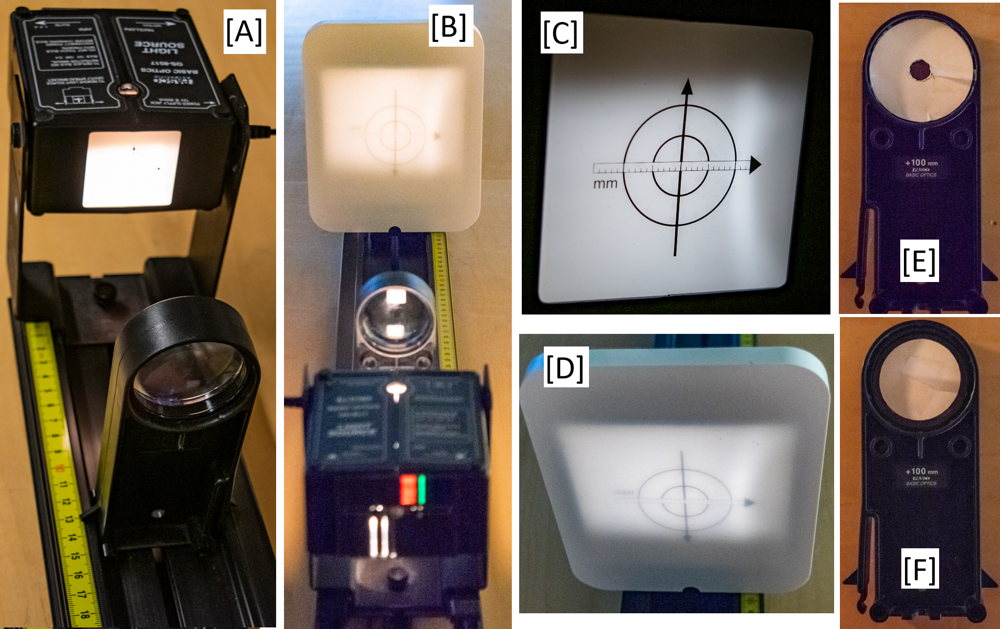

1146L-ONLY | Light – Geometric Optics and Imaging#
Background#
● Background Overview#
OVERALL GOALS
Use an object, thin lens, image screen on an optics track to:
Investigate light refraction, focal length, and magnification through lenses for light that is:
Unfiltered
Chromatically aberrated by narrow color filters
Spherically abberrated by lens shape
● Light, Lenses, Focal Length (Part I)#
Under many circumstances, the behavior of light can be analyzed by assuming that light travels in straight-line paths called light rays. Light rays are a representation of what is actually a very narrow beam of light. Using this representation of light, the behavior of many optical elements such as lenses and mirrors, and optical instruments such as telescopes, microscopes, and projectors can be analyzed. The use of the ray model draws heavily on geometry, and is called geometric optics.
In addition to using the ray model of light, the lens that will be used will be analyzed under the thin lens approximation. This approximation will assume that the thickness of the lens is very small compared with the focal length. The result of this assumption is that the bending of the rays as they pass through the lens is considered to have occurred at a plane surface through the mid-line of the lens, perpendicular to the principal axis. Actually, the bending (the refraction) occurs at both the entrance and exit surfaces separated by a finite distance.
In this experiment, the behavior of a simple lens will be investigated with the setup (example in Fig. 147).
{kind=link}

Fig. 147 A) Light box and lens mounted on optics track. B) Lightpath through lens onto the white screen. C) Image on the light box. D) Refracted image through the lens on the white screen. E) Annulus filter to allow light through center of lens. F) Disk filter to allow light through edges of lens.#
In preparing for this laboratory, you should review this section in your text, particularly the various techniques of ray tracing analysis, sign conventions, definitions of object/image distances and focal lengths of converging and diverging lenses. The relation of the focal length and the object and image distances under the assumption of a thin lens is given by
———————!!!!!!!!!!!!!!!!!!!!! where in text? ———————!!!!!!!!!!!!!!!!!!!!! ———————!!!!!!!!!!!!!!!!!!!!! ———————!!!!!!!!!!!!!!!!!!!!!
where \(s_\text{object}\) and \(s_\text{image}\) are the object and image distances respectively. Imaging a very distant object can reasonably approximate the focal length of a converging lens. From (162), if the object distance is very large compared to the focal length of the lens, the image distance is essentially the focal length. That is to say, the image of a very distant object is essentially at the focal point. Very convenient distant point sources of light are stars whose images are indeed at the focal point. For our laboratory, if available, sunlight will do just fine. Closer `distant’ objects in the laboratory will give reasonable approximations to the focal length of the lens used in this laboratory.
● Magnification#
The linear magnification, \(m\), produced by a lens is the ratio of the length of the image to the length of the object. This can be shown to also be equal to the ratio of the image distance to object distance, or
The minus sign accounts for the orientation of the image (erect or inverted with respect to the object) and the sign convention of the object and image distances. Another result of the thin lens approximation is the result shown in (164) which relates the effective focal length \(f\) of the combination of two thin lenses in very close proximity (perhaps in contact). The focal lengths of the individual lenses are \(f_{1}\) and \(f_{2}\).
Since diverging lenses cannot form real images, the imaging of a distant object as a method of measuring the focal length is not possible. However (164) can be used to approximate the focal length of a diverging lens by measuring the effective focal length of a known converging lens and the unknown diverging lens. Notice of course that the converging power of the positive lens (measured by the reciprocal of the focal length) must be greater in absolute value than the strength of the diverging lens since the effective focal length must be positive. (This measurement of the strength of the lens by the reciprocal of the focal length is the dioptic power of the lens, measured in m⁻¹.)
● Lens Effects#
There are two common defects or aberrations of the simple lens we will use.
○ Chromatic Aberration (Part II)#
The first common defect results from the wavelength dependence of the index of refraction of the glasses from which the lens is made. The change in index of refraction results in a focal length dependence on the wavelength, or color, of the light. Images formed from white light illumination of an object will produce colored images, each one formed at a slightly different image distance. If such an image were produced on a screen or a piece of film, you see an image whose edges were multicolored lines — a very disturbing effect. This defect must be corrected in most optical instruments designed to be used with white light. Binoculars, for example, would be totally useless with this so-called chromatic aberration.
○ Spherical Aberration (Part III)#
The second results from the spherical shape of the lens surfaces. The result is that the rays near the edge of a lens are refracted or bent more than those near the principal axis. The effective focal point of the outer rays is smaller than the focal length of the rays closer to the center. This so-called spherical aberration causes a large diameter beam to focus over a range of lengths and images formed at a specific distance from the lens will be somewhat fuzzy.
This experiment will examine the chromatic and spherical aberrations of simple, converging images. The chromatic aberration will be investigated by using color filters to permit the focal length measurement for specific colors. For the spherical aberration, the focal length will be determined by measuring the focal length of the lens when only certain rays are allowed through the lens. In one case an outer-annulus (donut-shaped) mask will allow only the rays near the center of the lens. A small inner-disk mask placed near the center of the lens will allow only the edge rays to be used in the second case.
For each case, the object and image distances are measured, and the focal length determined via (162).
The linear magnification will be determined by measuring the object and image size and comparing that ratio to the ratio of the object and image distance.
● Equipment#
The following equipment is shown in Fig. 148.
1.2 m black optics track to mount everything
Light box with illuminated object on it (position along track ruler noted by indented metal aligned with the ruler on the optics track) with power brick
Convex lens in lens holder (position of the lens in the holder is noted by a small plastic protrusion on the side of the holder to be lined up with the ruler on the optics track, basically centered in the holder)
Red and blue filter – attaches to light box
Inner-disk and outer-annulus light-blocking masks – attaches to lens holder
White viewing screen for displaying image
additional rulers as needed
Fig. 148 A) Light box and lens mounted on optics track. B) Lightpath through lens onto the white screen. C) Object on the light box. D) Refracted image through the lens on the white screen. E) Outer-annulus mask to allow light only through center of lens. F) Inner-disk mask to allow light only through edges of lens.#
Experimental Procedure#
● Preview#
PROCEDURE OVERVIEW
Investigate light refraction and geometric optics by measuring object (object-to-lens) and image (lens-to-image) distances to determine focal lengths and magnification. Do so with:
Part I: Unfiltered light for a range of object distances
Object distances \(s_\text{object} = \infty, 11, 13, 25, 40, 55, 70, 85 cm\)
Part II: Chromatic aberration (color filters)
Red filter
Blue filter
Part III: Spherical abberration (lens shape)
Light through edge of lens using inner-disk light-blocking mask
Light through center of lens using outer-annulus light-blocking mask
● Part I: Unfiltered, Varied Object Distances#
Using a distant object that you can assume to be effectively at ‘infinity’, measure the distance from the lens to the image (image distance). A distant object might be the sun, a tree outside the laboratory window, or at worst a light as distant as possible in the laboratory. Record your measurement or estimate of the object distance if it is not a very distance object. Measure and record the image distance as accurately as possible. Record the focal length found using (162) on the data sheet.
Create a data table for magnification with columns for object distance, object height, image distance, image height, the focal length, the magnification calculated from the heights and the magnification calculated from the distances from the lens.
On the optical bench, used for this and all succeeding steps, set up the illuminated object at 0.0 cm on the metric ruler along the track. Place the lens at 13.0 cm and move the screen to a position that produces the sharpest possible image. Record the object distance, which is measured from the light source to the lens. Also record the image distance, which is measured from the lens to the screen (not the location of the screen). Calculate and record the focal length using the object distance and the image distance. Is it consistent with the focal length measured with a distant object?
Only for non-filtered cases, measure the length of one of the arrows or circles on the object and measure the length of the same arrow or circle on the image and record them as \(h_\text{object}\) and \(h_\text{image}\) respectively. Calculate the resulting magnification with (163).
Create a data table with columns for object distance, image distance, and focal length from (162). Include rows for the red filter, the blue filter, the disk and the annulus. The lenses have only a little chromatic aberration and spherical aberration, so you will need to be careful locating the screen at the best focus.
Repeat steps 3 and 4 using the lens without the filters and without the annulus or disk. Add more rows to the data table using the object distances: 11 cm, 13 cm, 25 cm, 40 cm, 55 cm, 70 cm, and 85 cm. Calculate the average focal length and its standard deviation.
Set up a series of object and image distances and record the data points. Since the object and image can always be interchanged, each measurement of an object-image distance pair represents two data trials. Construct a graph where one axis is the image distance and the other is the object distance. For a particular data point, plot the object distance on the object axis and the image distance on the image axis. Connect the two points with a straight line. Repeat this process for each of your object-image data trials. In the ideal case, all of the lines should intersect at the point \((f,f)\). Visually estimate the point \((s_\text{object},s_\text{image})\) closest to the intersections and estimate the focal length by \(f=(s_\text{object}+s_\text{image})/2\). Compare this determination of the focal length with the values from steps 8, 1 and 3.
● Part II: Chromatic Aberration#
Repeat step 3 using first the red and then the blue filter in front of the object. While leaving the lens fixed at an \(s_\text{object} = 13\,\text{cm}\), move the screen to produce the best focused image. Carefully record only the object and image distances and determine the ‘red focal length’ and the ‘blue focal length.’
● Part III: Spherical Aberration#
Repeat step 3 using the two light stops or light masks; the disk and the annulus/donut. Center the disk mask filter in front of the lens so only rays near the outer edge of the disk are being used to form the image. Move the screen until the image is focused. Carefully measure the object and image distance and determine the focal length. Replace the disk with the annulus mask so now only the rays near the center of the lens are used to form the image and determine the focal length again. Record the data.
Post-Lab Submission — Interpretation of Results#
● Finalized Spreadsheets#
Make sure to submit your finalized data table (Excel sheet).
Please include concise summary table.
Please include plot:
One plot with all three cases on it with their own trendlines: \(\lambda\) vs \(1/f\)
● Post-lab Writeup#
In a paragraph, summarize your error analysis. Be quantitative, not only qualitative.
What is the precision of your equipment?
What are possible sources of systematic (i.e. affecting accuracy) and random (i.e. affecting precision) errors?
What are your measurement uncertainties, and, based on these uncertainties, how do your final results change? I.e. do your different measurement and slope uncertainties make your final results larger or smaller, by how much?
—— old vvvv —-
What are your measured uncertainties, and, based on these uncertainties, how do your final results change? I.e. do your different measurement and slope uncertainties make your final results larger or smaller?
Change different variables by your best estimation of measurement uncertainties in your Excel sheet; what variables affect the accuracy of your final results the most?
If larger or small, are they more or less accurate to expected values? ^^^^^^^^^^^^^
In a paragraph, summarize the results you have determined for all cases. Consider:
What was the point of today’s lab; what did we aim to discover?
How do your focal lengths from each set compare (distant object vs. 13 cm, red vs. blue, disk vs. annulus?
Do they agree based on your uncertainties?
Physically, why is the focal length from the red or blue filter shorter or longer; what would cause that?
Physically, why does the disk or annulus filtered light produce a shorter or longer focal length; what would cause that?
For your plot of image vs. object distances, where do the lines from each object/image pair converge; does that value ± your estimated uncertainty from the plot agree with your average value for focal lengths for the variety of image/object distances?
On the plot, why do the lines converge?
The Whiteboard#

Fig. 149 Overview.#